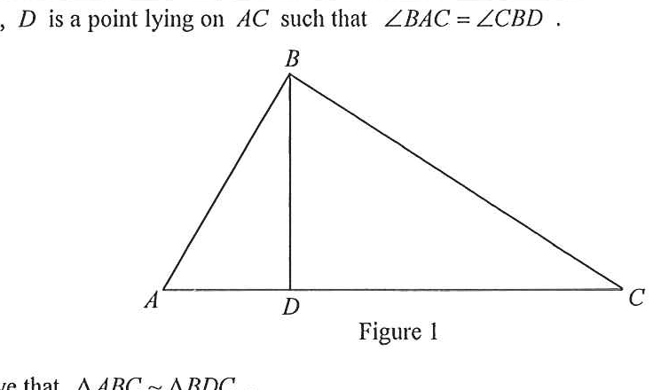

In Figure 1, \(D\) is a point lying on \(AC\) such that \(\angle BAC = \angle DBC\). (a) Prove that \(\triangle ABC \sim \triangle BDC\). [2 marks] (b) Suppose that \(AC = 25\) cm, \(BC = 20\) cm and \(BD = 12\) cm. Is \(\triangle BCD\) a right-angled triangle? Explain your answer. [3 marks]

Figure (original exam diagram)
💡 Hints: For (a) look for two pairs of equal angles — one pair is given, the other is a common angle.
For (b) use the similarity ratio to find the third side, then test the converse of the Pythagorean theorem.
AAA Similarity Criterion\(\angle A=\angle A^{\prime},\ \angle B=\angle B^{\prime}\;\Longrightarrow\;\triangle ABC\sim\triangle A^{\prime}B^{\prime}C^{\prime}\)Two pairs of equal angles already force the third pair, so \(\triangle ABC\) and \(\triangle BDC\) are similar.
Two pairs of corresponding angles are equal, so the third pair is also equal. Hence the two triangles are equiangular and therefore similar (AAA):
$$\boxed{\triangle ABC \sim \triangle BDC}$$
STEP 3 · Set up the ratio (part b)
Corresponding Sides of Similar Triangles\(\dfrac{AB}{A^{\prime}B^{\prime}}=\dfrac{BC}{B^{\prime}C^{\prime}}=\dfrac{CA}{C^{\prime}A^{\prime}}\)Matching the sides of \(\triangle ABC\) and \(\triangle BDC\) gives \(\dfrac{CD}{BC}=\dfrac{BC}{AC}\).
Since \(\triangle ABC \sim \triangle BDC\), corresponding sides are proportional:
$$\frac{CD}{BC}=\frac{BC}{AC}$$
(\(BC\) corresponds to \(AC\), and \(CD\) corresponds to \(BC\).)
Converse of Pythagoras Theorem\(a^{2}+b^{2}=c^{2}\;\Longrightarrow\;\angle C=90^{\circ}\)Since \(12^{2}+16^{2}=20^{2}\), the right angle is opposite \(BC\), that is at \(D\).
(a) Since \(\angle BAC=\angle DBC\) (given) and \(\angle ACB=\angle BCD\) (common angle), \(\triangle ABC\sim\triangle BDC\) (AAA).
(b) Yes. From the similarity, \(CD=16\) cm, and \(12^2+16^2=20^2=BC^2\). By the converse of the Pythagorean theorem (with \(\angle BDC = 90^\circ\)), \(\triangle BCD\) is a right-angled triangle.
PRACTICESimilar question — try it yourself
Question. In the figure, \(D\) is a point lying on \(AC\) such that \(\angle BAC=\angle DBC\). Suppose that \(AC=50\text{ cm}\), \(BC=30\text{ cm}\) and \(BD=24\text{ cm}\). (a) Prove that \(\triangle ABC\sim\triangle BDC\). [2 marks] (b) Is \(\triangle BCD\) a right-angled triangle? Explain your answer. [3 marks]
Show the worked solution
Step 1. (a) In \(\triangle ABC\) and \(\triangle BDC\): \(\angle BAC=\angle DBC\) (given) and \(\angle ACB=\angle BCD\) (common angle).
Step 2. Two pairs of corresponding angles are equal, so the triangles are equiangular and hence similar: \(\triangle ABC\sim\triangle BDC\) (AAA).
Step 3. (b) Corresponding sides are proportional: \(\dfrac{CD}{BC}=\dfrac{BC}{AC}\), so \(\dfrac{CD}{30}=\dfrac{30}{50}\) and \(CD=\dfrac{30\times 30}{50}=18\text{ cm}\).